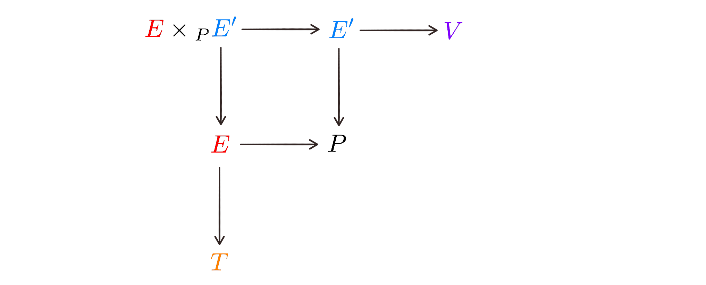

Like it or not, the machine learning hype, well, hyped up the interest in statistics and even more basic math-related subjects like linear algebra, differential calculus, and stuff that would made most my then-little friends in school cringe and decide to become lawyers right there and then, probably to the detriment of the world at large. Somewhat like its wiser and less maligned cousin, statistics, machine learning is a broad class of methods that aim at describing different kinds of data ranging from scientific experiments to add-clicking on whatever shitty social media site is (directly or indirectly) selling your data today. That is all fine and well, but as a scientist I am interested not in describing the data per se but in associating the observed data to the processes generating them — there is a (subtle apparently) difference there that often goes underappreciated.
The limitations of many data-driven approaches have been criticized in different ways. Judea Pearl’s research (as well as his recent popular exhibit Book of Why and the technical text Causality pointed out the lack of the “arrow of time” and causal links in statistical analyses. More generally, the majority of approaches probably lack mechanistic insight, and law-like knowledge that is composable into a larger scale understanding. Being model-based on its own does not necessarily fix these issues. Linear models, for instance, can be very useful to describe simple trends, but the parameters most likely have no explicit meaning. When fitted to a bacterial growth curve, for instance, the line intercept can be interpreted as the initial number of bacteria, but the slope really means nothing; in contrast the exponential growth parameter can be interpreted as the rate at which they double (in log scale these can be equivalent). Linear models (or their generalized, but still essentially linear versions) are the core of methods to analyze data like gene expression (Love et al. 2014, Ritchie et al. 2015), but each gene is treated as a linear model independent from all other genes. There are few things I can think of that are more non-linear and coupled than genetic networks, and yet that is the state-of-the-art of analysis of the transcription of DNA into RNA, translation to protein and other modified products. The point applies a lot more broadly to trend-capturing models that on the other hand do not describe actual natural processes. In contrast to that are, for instance, dynamic models of well-studied gene networks like those of circadian clocks (Goldbeter 2002). Those rely on detailed knowledge of interaction of genes and gene products, and aim at explaining the observed dynamic patterns. Ideally, they should also allow identifying unknown components or less-detailed roles of the known ones, and even missing components and their roles. Nevertheless, it is unlikely that this approach can be scaled up from a couple of dozen to include thousands of genes and validated directly against genome-scale data sets with the tools available presently. Moving from particular observations to general laws is a challenging task at the core of science and a recurring subject in its philosophy; it is not straightforward, so different scientists will have different ideas for how to go about it. I’ll try to loosely illustrate some of the approaches, particularly in biology as in the above examples of genomic data analysis. They could range from a very abstract approach to find a very general pattern, to a very pragmatic approach to get specific answers. The first extreme could result in a “soft” answer, while the second is more likely to result in a pipeline of procedural or algorithmic steps that could be informal and difficult to integrate into a modular framework. In my opinion there is unfortunately no “happy middle”, but something is needed that accounts for smaller scale patterns as well as integrating modularly into general laws. If that’s not asking too much. I don’t have a simple answer (and probably not a full complex one either) for a framework that permeates all the scales. I think some of it can be achieved by addressing the limitations of mathematical modeling and statistical inference as we try to model increasingly large systems and infer their parameters. But alternatively, if may be necessary to use a different formal framework, like the mathematics of sets and category theory, which may not model quantitative relationships as strictly as our usual equations can, but may allow formal relationships between different modules and experimental designs. That is a question that is unlikely to be settled any time soon and is fertile ground for the philosophy of science. Whatever it is I think there is only hope of real progress if we can make the relationship between everything that is studied (within and between systems) formal in the mathematical sense so that it cohesively builds up towards something.
- Judea Pearl, Dana Mackenzie. The Book of Why. 2018 Basic Books, New York.
- Judea Pearl. Causality. 2009 Cambridge University Press.
- Love, Huber, Anders. Moderated estimation of fold change and dispersion for RNA-seq data with DESeq2. Genome Biology 2014; 15:550
- Ritchie, Phipson, Wu et al. limma powers differential expression analyses for RNA-sequencing and microarray studies. Nucleic Acids Research 2015; 43:e47,
- Goldbeter. Computational approaches to cellular rhythms. Nature 2002; 420:238–245
-- caetano,
November 26, 2018